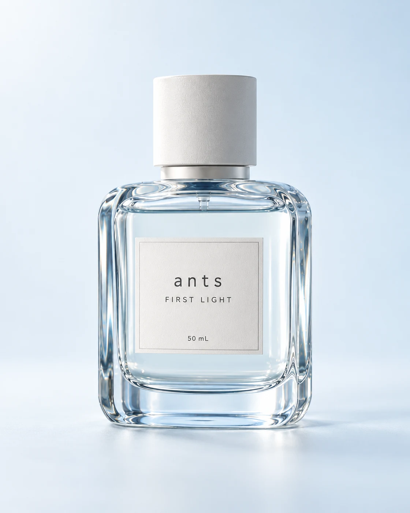
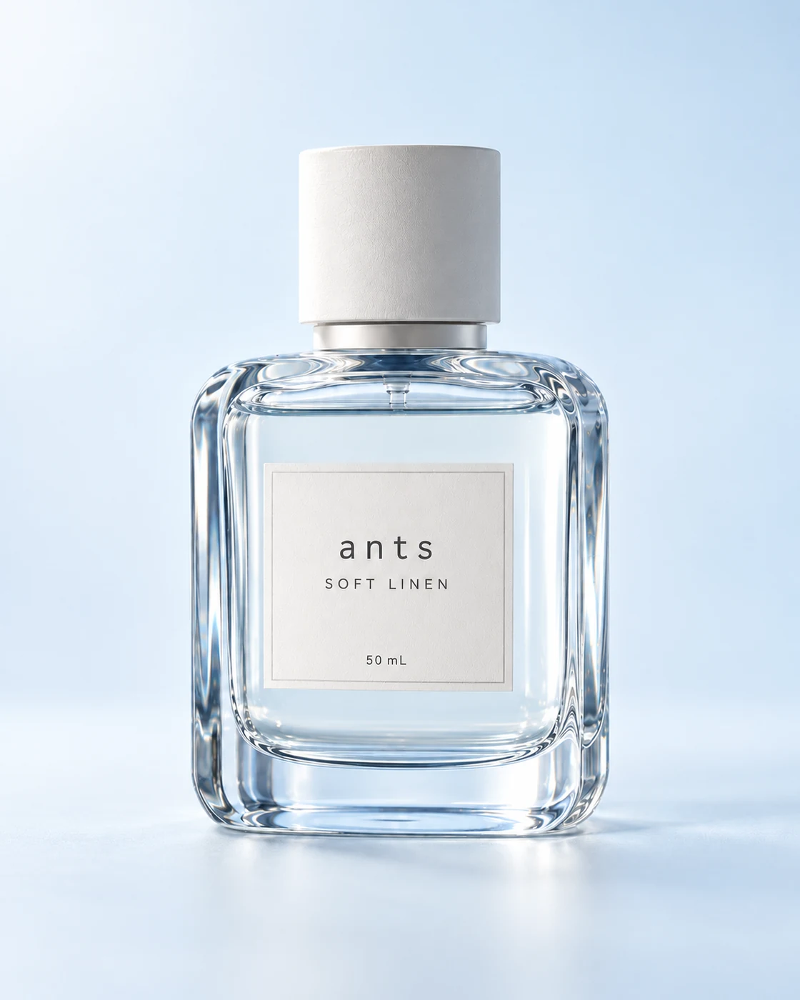
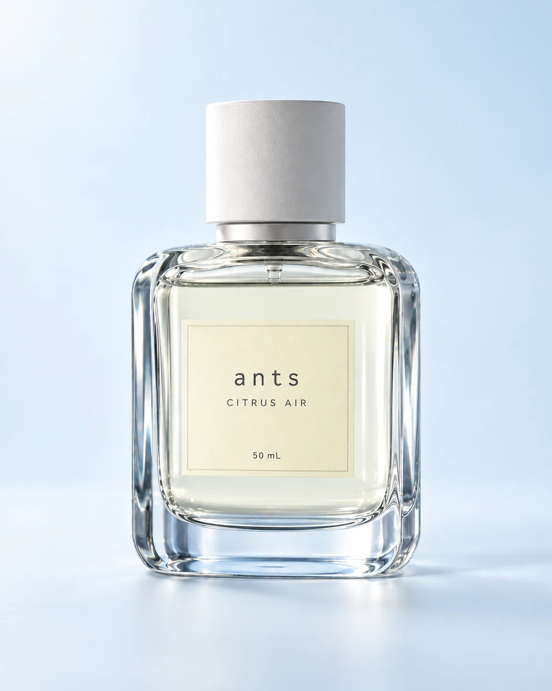
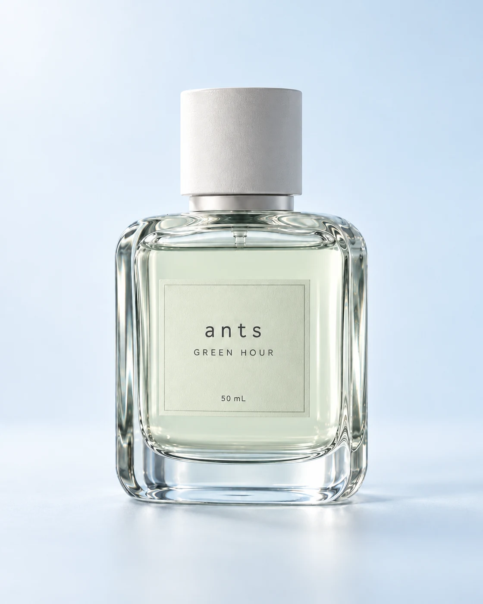
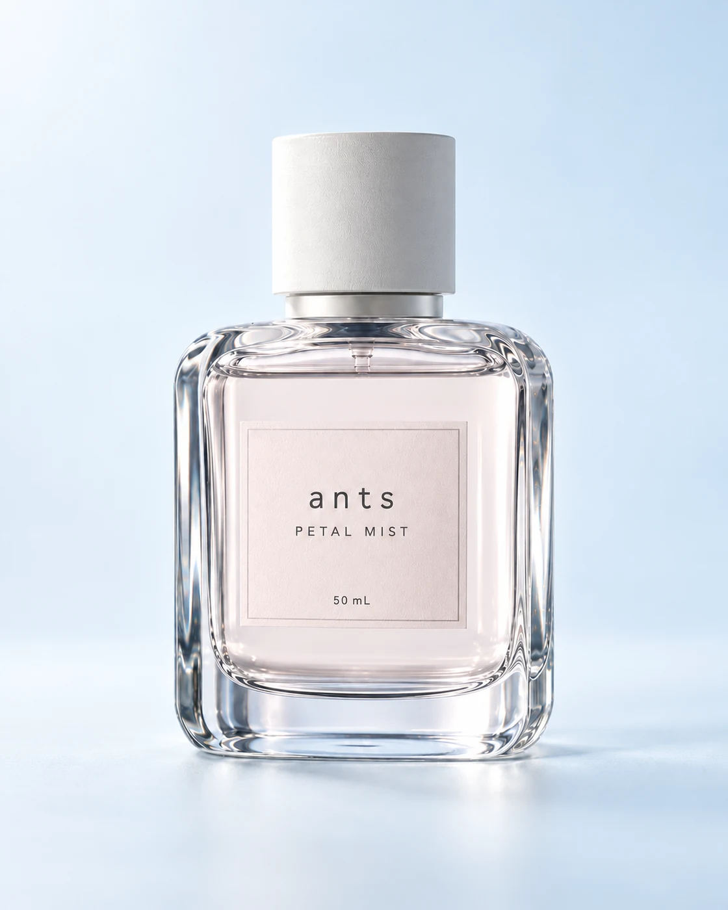
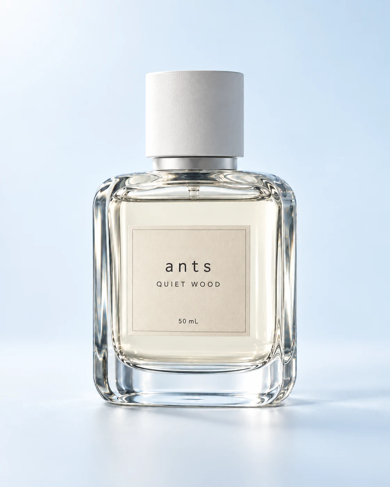

FIRST LIGHT
클린씻고 나온 듯 맑은 비누향
50mL69,000원

아침의 장면을 준비하고 있어요.
씻고 나온 듯 깨끗한 기분.
하루의 시작에 작은 향을 더하세요.

샤워를 마친 아침처럼
맑고 편안한 향의 이미지를 담았습니다.
바쁜 하루를 시작하기 전,
나를 위한 작은 향의 습관.

외출을 준비하는 잠깐의 순간.
나를 위한 작은 향의 습관을 더해보세요.

씻고 나온 듯 맑은 비누향
50mL69,000원

햇볕에 말린 린넨 같은 포근함
50mL69,000원

깨끗한 공기처럼 산뜻한 시트러스
50mL69,000원

비 갠 잎사귀 같은 투명한 초록빛
50mL72,000원

이슬 맺힌 꽃잎처럼 여린 플로럴
50mL72,000원

밝은 나무결처럼 차분한 우디
50mL75,000원